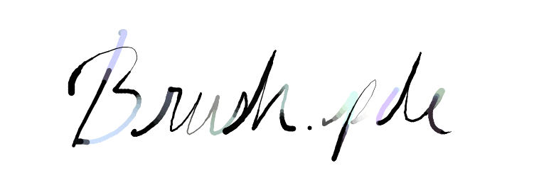

Brush.pde is a small painting tool that I created for my Interactivity class. It is currently not very polished as I have only been able to spend a few hours on it as of now.
Anyways, this page's primary purpose is to serve as a test for when I end up creating a progress page for the game I am working on.
The primary goal behind Brush.pde was to be able to dynamically control the brush attributes. As a result, the user is able to input math expressions into each of the different attribute fields. You can even use the other attributes as part of the calculation. And I have also exposed some variables like the current frame or time in seconds which can be used as part of the calculation
Basically any Java Math function can be used--just prefix it with Math.function (ie. Math.random()).
Unfortunately, because Processing doesn't seem to have anything like Python's "exec", I've had to use a Javascript Engine to evaluate the expressions.
Currently the tool can save out user brush configs to a text file, but unfortunately cannot read them back in... yet.
Oh yeah. And why did I put 100 - hue + 50 instead of just 150 - hue? I was initially tweaking then numbers around, and unfortunately, because you can't click on the spot you want the cursor to go to (you have to use the arrow keys for now), it was easier to just add 50. Then when I was recording the screencast, I just mindlessly ended up copying the same thing.
Here are random scribbles I've created with the tool (also the title was also made with it).
